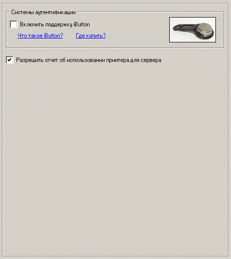

Наиболее важные опции на этой вкладке:
Cистемы аутентификации - iButton
Не всегда бывает удобно вводить каждый раз пароль, скажем, VIP-пользователю. Гораздо проще просто прикоснуться неким идентификатором к считывателю.
В данный момент поддерживаются считыватели iButton. Включите данную опцию для поддержки такого рода устройств.
Осуществляется поддержка только устройств, подключенных к COM-порту компьютера (как самых распространенных). Если имеется только USB-адаптер, то можно использовать переходник RS-232 - USB.